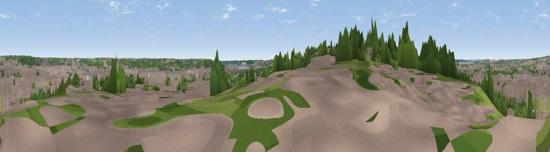

Viewpoint near Ipswich
#45471 in England · top 60% of its area beats it · near IpswichWhere it is
The exact computed spot (TM 16025 43625). Click the marker for map links.
The view, rendered

A 360° render of this exact spot computed from the terrain model, tree cover and land cover — summer colours, afternoon light, calibrated against photographs of famous viewpoints. Real trees, hedges and buildings will differ in detail.
The panorama
Grey silhouette: terrain skyline in each direction (720 bearings, Earth curvature and refraction included). Dashed green: skyline with trees (+15 m) and buildings (+8 m) as obstacles. Blue strip: how far the ground is visible on each bearing.
Where the view opens
Wedge length = distance to the farthest visible ground on that bearing (vegetation-aware). Rings at 10, 25 and 50 km.
What fills the view
61% built-up · 22% woodland · 11% grassland · 5% water · 1% cropland
Angular shares of the visible panorama (visual magnitude), not map area. Landscape diversity 0.47 (0–1 Shannon).
Key numbers
More beautiful places nearby
The staircase of upgrades: each row has a higher view potential than everything closer. Driving times are estimates from straight-line distance, calibrated against real road routing — check an actual route before setting out.
| Place | Direction | Drive | Score |
|---|---|---|---|
| Constitution Hill | N · 2 km | ~6 min | 19.2 |
| Viewpoint near Wherstead | S · 2 km | ~6 min | 31.3 |
| Viewpoint near Trimley St Mary | SE · 14 km | ~26 min | 41.0 |
| Gun Hill | NE · 47 km | ~68 min | 46.7 |
| Stamfords Hill | SSW · 52 km | ~74 min | 49.4 |
| Viewpoint near Hadleigh | SSW · 67 km | ~90 min | 57.4 |
| Viewpoint near Hadleigh | SW · 67 km | ~91 min | 61.0 |
| Viewpoint near Detling | SSW · 92 km | ~117 min | 62.5 |
52.04889, 1.14905 · source: screening · position refined by local search. Computed location — check access rights before visiting.